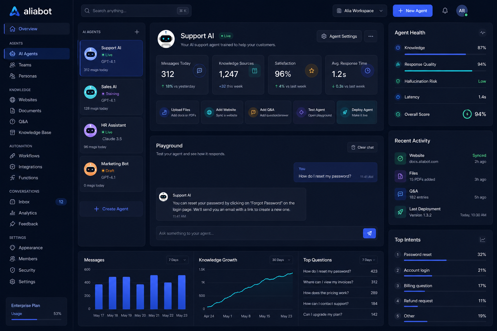

FUNCIONES
Es como tener un ChatGPT hecho a la medida de tus productos. Responde al instante las preguntas de tus visitantes con un chatbot personalizado entrenado con el contenido de tu sitio web.
Aliabot es una solución de soporte lista para producción que hace el trabajo de un equipo completo de soporte a una fracción del costo.
Gestiona todos tus chatbots, fuentes de entrenamiento, conversaciones y métricas de desempeño desde un solo panel limpio y sencillo.

Aprovecha todo el potencial de tu chatbot personalizando su conocimiento y su apariencia.
Ingresa una URL para que Aliabot la escanee, sube archivos o pega texto directamente, para que sea más fácil que nunca mantener tu chatbot informado y efectivo.
Usa el historial real de conversaciones para afinar y mejorar tu chatbot dando retroalimentación que le permita mejorar con cada interacción.
Elige entre dos potentes modelos de IA y cambia en cualquier momento según cómo quieras que se comporte tu chatbot. GPT-4o prioriza la velocidad, mientras que GPT-4.1 prioriza la profundidad y la precisión.
Inserta un chatbot en tantos sitios como quieras: tu sitio de marketing, dentro de tu app, tu centro de ayuda... donde sea.
Personaliza tu chatbot para que combine con tu marca, usando logos y colores propios para brindar una experiencia de usuario coherente.
Mejora las interacciones con tus usuarios gracias a funciones potentes como motores de IA avanzados, soporte multilenguaje y una escalación fluida a personas.
Ofrece a los usuarios ideas para romper el hielo. Incluye preguntas frecuentes o preguntas que te gustaría que más usuarios hicieran para sacarle valor a tu producto o servicio.
Revisa cada conversación, evalúa el desempeño del chatbot y determina si las preguntas de los visitantes fueron resueltas de forma efectiva. Nunca estarás a oscuras sobre lo que tu chatbot está respondiendo.
Aunque la IA puede resolver la gran mayoría de las consultas, algunas conversaciones requieren un toque humano. Los usuarios pueden pasar la conversación a un agente en vivo con solo un clic. Este enfoque híbrido garantiza que los usuarios siempre reciban la mejor ayuda posible.
No te quedes solo respondiendo preguntas, aprovecha las oportunidades. Tu chatbot captura los datos de los visitantes interesados, permitiéndote construir una lista de posibles clientes.
Amplía las capacidades de tu chatbot con automatización, resúmenes útiles e integraciones potentes.
Permite a los usuarios automatizar tareas con solo interactuar con tu chatbot. Tu chatbot puede escuchar, entender e interactuar con otros sistemas según las interacciones de chat.
Saber Más chevron_rightMantente al tanto de las interacciones del chatbot con resúmenes diarios enviados a tu bandeja de entrada. Sube más datos de entrenamiento cuando lo necesites, monitorea el desempeño del chatbot y obtén información sobre el comportamiento de los usuarios.
Aliabot se integra con WhatsApp Business para escalar conversaciones a un agente humano. Slack y Zendesk llegarán próximamente.
Tus datos están cifrados, con control de acceso y nunca se usan para entrenar modelos de IA.
Nunca usamos tu información para entrenar otros modelos de IA.
Todas las conversaciones van cifradas y protegidas.
Sin contratos, sin permanencia. Tú tienes el control.
¿Tienes otra pregunta? Escríbenos a hola@aliabot.co y te respondemos lo antes posible.
Descubre si un chatbot de soporte con IA personalizado es adecuado para ti en solo unas horas.